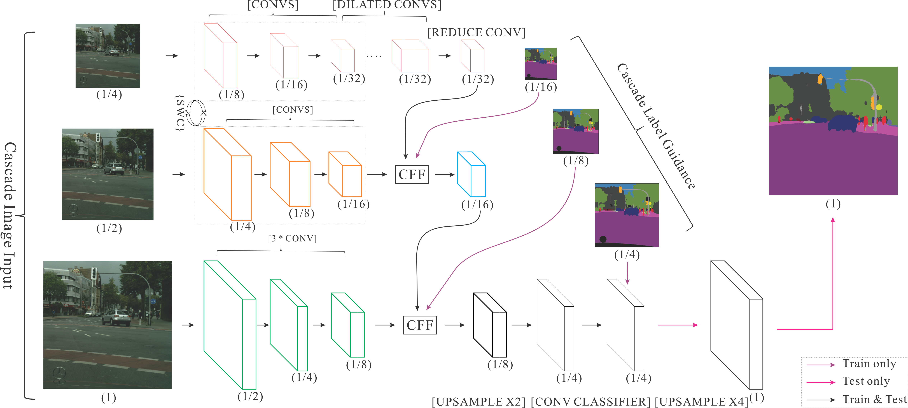
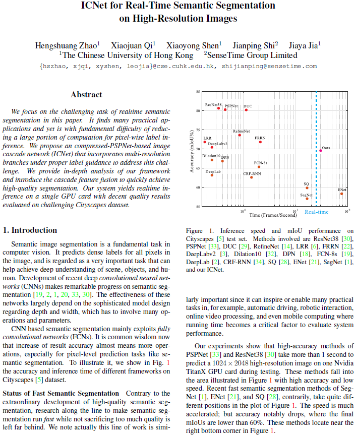

Hengshuang Zhao 1 Xiaojuan Qi 1 Xiaoyong Shen 1 Jianping Shi 2 Jiaya Jia 1
1 The Chinese Univeristy of Hong Kong 2 Sensetime Group Limited
|  |
Figure 1. Our image cascade network (ICNet). Numbers in parentheses are feature map size ratios to the full-resolution input. Operations are highlighted in brackets. ‘SWC’ in the braces stands for sharing weights and computation of several convolution layers in top and middle branches. The final upsampling is only used during testing. |
Abstract
We focus on the challenging task of realtime semantic segmentation in this paper. It finds many practical applications and yet is with fundamental difficulty of reducing a large portion of computation for pixel-wise label inference. We propose an compressed-PSPNet-based image cascade network (ICNet) that incorporates multi-resolution branches under proper label guidance to address this challenge. We provide in-depth analysis of our framework and introduce the cascade feature fusion to quickly achieve high-quality segmentation. Our system yields realtime inference on a single GPU card with decent quality results evaluated on challenging Cityscapes dataset.
Downloads
|  | "ICNet for Real-Time Semantic Segmentation on High-Resolution Images" Hengshuang Zhao, Xiaojuan Qi, Xiaoyong Shen, Jianping Shi, Jiaya Jia. Technical report (arXiv), 2017 |
Video
Demo video processed by ICNet on cityscapes dataset:
Last update: April. 28, 2017